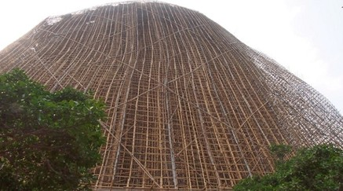
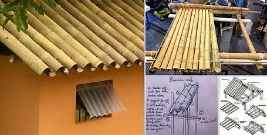
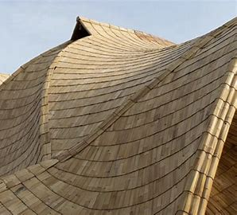
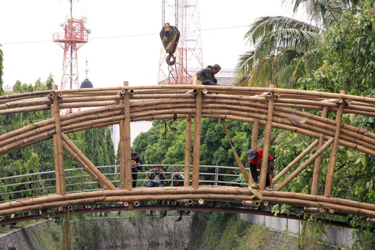
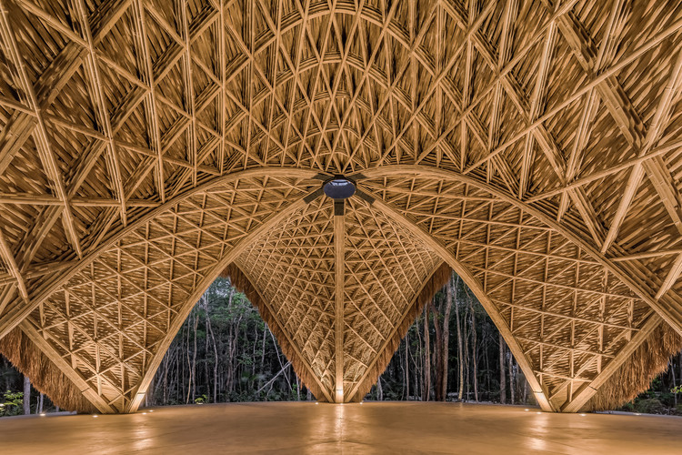

<!DOCTYPE html>

<html>

  <head>
  


  </head>

  </html>
  <h1><b>ENG0018 Computer Laboratory 2024/25</b></h1>
  <h2>Student URN: 6901368</h2>
    <hr>
    <h2 style="font-family:calibri;"><b>Conference paper: Structural Integrity of Bamboo as A Sustainable Building Material </b></h2>
      <hr>

    <!style for tables>
    <style>
      table {
          font-family: arial, sans-serif;
          border-collapse: collapse;
          width 30%; 

        }  

        td, th {
            border: 1px solid #dddddd; 
            text-align: left; 
            padding: 8px; 
        }

      tr:nth-child(even) {
         background-color: #dddddd;
      }
      


      
        </style>

    <style>
     p.ex1 {
       margin-left: 250px;
  }
    </style>
     </head>

  <meta name="viewport" content="width=device-width, initial-scale=1">
  <link rel="stylesheet" href="https://www.w3schools.com/w3css/4/w3.css">
  <style>
   .mySlides {display:none;}
  </style>
  <body style="backgroumd-color:#FFFFFF;margin-left:50px;">
  </style>


    <!table of contents>
    <table>

      <tr>
        <th><h3>Table of contents</h3></th>
      </tr>
      
      <tr>
        <td><a href="#Abstract">Abstract</td>
      </tr>
      
      <tr>
        <td><a href="#Introduction">Introduction</td>
      </tr>
      
      <tr>
        <td><a href="#Mechanical properties">Mechanical properties</td>
      </tr>
      <tr>
         <td><a href="#Analysis and discussion">Analysis and discussion</td>
      </tr>
       
      <tr>
        <td><a href="#Applications in construction">Applications in construction</td>
      </tr>
      
      <tr>
        <td><a href="#Conclusion">Conclusion</td>
      </tr>
      
      <tr>
     <td><a href="#References">References</td>         
      </tr>
    </table>


  <hr>
    <h3>
      <h3 id="Abstract">Abstract</h3>
    <p class="ex1" >
      <pre>
        This project examines the durability of bamboo as a sustainable material for modern construction. 
        By testing the strength of various bamboo species and comparing their ability to withstand pressure, tension,
        and shear, we aim to understand how they stand out from traditional materials such as wood, brick, and concrete. 
        The findings suggest that bamboo is much stronger than these materials, making it a viable option for structural 
        applications. Additionally, this project highlights successful construction projects made of a bamboo, providing 
        further evidence to support the theory that bamboo can meet essential strength standards while contributing to 
        reduced carbon emissions in the construction industry.
      </pre>
    </p>
<h3 id="Introduction">Introduction</h3>
      <P class="ex1">
        
        <pre>
       In recent years, bamboo has emerged as a versatile and sustainable building material due to its exponential growth,
       strength, and flexibility. Its primary applications range from constructing walls and roofs to scaffolding, which is
       important in regions prone to earthquakes. Although bamboo offers eco-friendliness, affordability and durability,
       challenges like susceptibility to pests and fungi highlight the need for proper maintenance. This article delves into
       the properties, advantages, and limitations of bamboo, giving evidence to its potential to transform modern construction
       in an environmentally sustainable manner.    
    </pre>
    </p>
      
  <h3 id="Mechanical properties">Mechanical properties</h3>
<p class="ex1">
    <pre>
       1. <u>Tensile strength</u>
       Bamboo's fiber composition consists of cell walls that are rich in long, aligned cellulose fibres that provide significant
       resistance to pulling forces, making them strong in tension. Recent studies <a href="https://www.guaduabamboo.com/blog/mechanical-properties-of-bamboo" target="_blank">(Guadua Bamboo, n.d.)</a>; <a href="https://doi.org/10.1088/2043-6262/15/4/567" target="_blank">(Sánchez et al., 2019)</a>
       show that their tensile strength ranges between 100-400 MPa, which is significantly higher than most construction-grade timbers. 
      
      2. <u>Compressive strength</u>
      Bamboo's ability to withstand being squashed or compressed typically ranges between 40 and 80 MegaPascals,<a href="https://www.guaduabamboo.com/blog/mechanical-properties-of-bamboo" target="_blank">(Guadua Bamboo, n.d.)</a> 
      depending on the species and conditions. This strength is much higher than most types of wood, which makes bamboo an excellent
      choice for load-bearing applications.(eg gas turbines, concrete mixtures and rope conveyers)
      
     3. <u>Elastic modulus</u>
      The bending modulus of elasticity of bamboo refers to the stiffness or resistance to deformation when a bending force is applied. According to <a href="https://www.materialspalette.org/bamboo/" target="_blank">Material Palette (n.d.)</a>
      the modulus of elasticity in bending can reach up to 20 GigaPascals, depending on the species and moisture content. This provides further evidence on why 
      the usage of bamboos are ideal for building beams, roofing frameworks, and flooring panels. It has a great strength-to-weight performance, which is much better
      than traditional hardwoods.

      4. <u>Density</u>
      Common bamboo species like Moso and Gadua have densities of approximately 500-800 kg/m³ according to <a href="https://kg-m3.com/material/bamboo" target="_blank">Bamboo density</a>
      which is comparable to lightweight woods but less dense than concrete (2,400 kg/m³) or steel (7850 kg/m³). Bamboos have low density, making them the 
      ideal choice for construction where  weight reduction is crucial especially for scaffolding and creating lightweight roof structures. <a href="https://iarjset.com/wp-content/uploads/2019/09/IARJSET.2019.6906.pdf"_blank">IARJSET,(2019)</a>
      
      
    </pre>
</p>
      <h3 id="Analysis and discussion">Analysis and discussion</h3>
<!DOCTYPE html>
<html>
<head>
    <title>Mechanical Properties Comparison</title>
    <script type="text/javascript" src="https://www.gstatic.com/charts/loader.js"></script>
    <script type="text/javascript">
        google.charts.load('current', {'packages':['corechart']});
        google.charts.setOnLoadCallback(drawChart);

        function drawChart() {
            var data = google.visualization.arrayToDataTable([
                ['Material', 'Density (kg/m³)', 'Tensile Strength (MPa)', 'Compressive Strength (MPa)', 'Elastic Modulus (GPa)'],
                ['Bamboo', 700, 100, 40, 20],
                ['Softwood Timber', 500, 50, 30, 12],
                ['Hardwood Timber', 800, 80, 50, 14],
                ['Concrete', 2400, 10, 250, 30],
                ['Steel', 7850, 250, 250, 200]
            ]);

            var options = {
                title: 'Comparison of Mechanical Properties of Building Materials',
                chartArea: {width: '50%'},
                hAxis: {
                    title: 'Material',
                    minValue: 0
                },
                vAxis: {
                    title: 'Values'
                },
                seriesType: 'bars',
                isStacked: true
            };

            var chart = new google.visualization.ComboChart(document.getElementById('chart_div'));
            chart.draw(data, options);
        }
    </script>
</head>
<body>
    <h2>Comparison of Mechanical Properties of Building Materials</h2>
    <div id="chart_div" style="width: 900px; height: 500px;"></div>

  <u>Analysis of graph</u>
  <p class="ex1">
    <pre>
  Bamboo is light with a density of 700 kg/m³. That makes it lighter than concrete, which is 2400 kg/m³, and steel, which is 7850 kg/m³. 
  It’s a bit heavier than softwood at 500 kg/m³, but it matches hardwood, which ranges from 700 to 1200 kg/m³. Because of its low density, 
  bamboo works great where light materials are needed. For instance, it's often used in building walls that can withstand earthquakes. These 
  walls use bamboo frames covered with soil. This gives them strength and flexibility.

  When it comes to strength, bamboo holds up well. It can take about 100 MPa of stress. That’s double the strength of softwood, which can take 
  50 MPa, and just a bit stronger than hardwood, which is at 80 MPa. It doesn’t match steel, which can take 250 MPa, but bamboo’s strength and 
  lightness make it perfect for scaffolding. It can hold heavy loads but is easy to handle.

  Bamboo also has decent stiffness. Its elastic modulus is around 20 GPa. That’s more than softwood at 12 GPa and hardwood at 14 GPa, meaning it’s
  stiffer. But it's not as stiff as concrete at 30 GPa or steel at 200 GPa. This mix of stiffness and flexibility is great in building. It helps
  bamboo absorb and spread stress, especially during earthquakes. This is why bamboo is often used in lightweight structures like bridges and roofs,
  where flexibility and strength are very important.
   
 </pre>
</p>
  
<u>References for graph</u>
  
      <p class="ex1">
        <pre>
 <b>Bamboo Properties:</b> Guaduabamboo.com. (n.d.). <em>Applications of Bamboo in Construction</em>. Retrieved from <a href="https://www.guaduabamboo.com/blog/mechanical-properties-of-bamboo" target="_blank">Guadua Bamboo</a>.
 <b>Timber Properties:</b> American Bamboo Society. (2021). <em>Mechanical Properties of Bamboo vs. Timber</em>. Retrieved from <a href="https://www.americanbamboo.org/wp-content/uploads/2021/03/JABSv29_Sanchez_20191007.pdf" target="_blank">American Bamboo Society</a>.
 <b>Concrete and Steel:</b> General industry data from construction materials research.
        </pre>
     </p>
    
</body>
</html>
     

      
      <h3 id="Applications in construction">Applications in construction</h3>
      <p class="ex1">
        <pre>
   1.<u>Scaffolding</u>
    Thanks to their exceptional ability to support heavy loads, bamboo is widely regarded as an ideal material for scaffolding, including talll structures. 
    Extensions made from bamboo canes are created by lashing the ends together with multiple ropes. The arrangement of these ties are important as it helps 
    vertical forces like weight of workers and heavy materials to join with the nodes effectively in th elashing. This helps distribute the weight equally 
    throughout the joints, ensuring the structure can handle a large weight without collapsing.
        
       <figcaption> Bamboo scaffolding in use (The Contructor, 2016). <a href="https://theconstructor.org/building/bamboo-as-a-building-material-uses-advantages/14838/" target="_blank">[online] Available here</a>. </figcaption>
          
  2.<u>Roofing</u>
   There are three types of bamboo roofing: 
  (1) <b>Thatch Bamboo Roofs</b> : They are mostly found in tropical regions like Bali, Indonesia, where dried grass are used for insulation and are flexible enough to provide 
      curvature for roof designs. However they do require high maintenance and need replacemet every 3-7 years. and sustainability (<a href="https://www.archdaily.com/962225/roofing-systems-for-bamboo-buildings" target="_blank">ArchDaily, 2021</a>).
          
  (2) <b>Halved Bamboo Roofs</b> : this involves splitting bamboo poles lengthwise and arranging them in interlocking patterns, like Spanish tiles whilst adding layers
      like woven bamboo mats to increase durability.
          
  (3) <b>Flattened Bamboo Shingles</b> : Bamboos poles are sliced and flattened into sheets. These shingles are waterproof and provide shelter for households.

  (4) <b>Bamboo-Metal Hybrid Roofs</b> :This is when bamboo is combined with modern materials like polyurethane foam and metal panels in order to increase the fire
      resistance and thermal insulation. (<a href="https://doi.org/10.6007/ijarbss/v12-i12/15170" target="_blank">Wan Mohammad et al., 2022</a>).
          
  
  <figcaption>Figure 1: Bamboo roofing. How to Build With Bamboo: 19 Projects You Can Do at Home. [online] Home Design, Garden & Architecture Blog Magazine.
  Available at: <a href="https://goodshomedesign.com/how-to-build-with-bamboo-19-projects-you-can-do-at-home/" target="_blank"></a> [Accessed 6 Dec. 2024]. </figcaption>
         
   
   <figcaption>Flattened Bamboo Roofing (Bamboo U, 2021). Innovative Flattened Bamboo Roofing for Sustainable Architecture. [online] Bamboo U. 
     Available at: <a href="https://bamboou.com/flattened-bamboo-roofing-in-bamboo-architecture/" target="_blank">https://bamboou.com/flattened-bamboo-roofing-in-bamboo-architecture/</a> [Accessed 6 Dec. 2024]. </figcaption>
          
  3. <u>Bridges</u>
    Bamboo footbridges are common especially in Southeast Asia. They have a significantly lower carbon footprint compared to traditional materials like concrete. Projects like 
    Luum Temple in Mexico provides evidence of the uses of bamboo and how they are able to withstand lateral loads such as winds and sesimic forces.(<a href="https://www.archdaily.com/962225/roofing-systems-for-bamboo-buildings" target="_blank">ArchDaily, 2021</a>).
    
          <figcaption> Bamboo scaffolding in use. ArchDaily. (2017). Bamboo Bridge in Indonesia Demonstrates Sustainable Alternatives for Infrastructure. 
  [online] Available at: <a href="https://www.archdaily.com/873588/bamboo-bridge-in-indonesia-demonstrates-sustainable-alternatives-for-infrastructure" target="_blank">https://www.archdaily.com/873588/bamboo-bridge-in-indonesia-demonstrates-sustainable-alternatives-for-infrastructure</a> [Accessed 6 Dec. 2024]. </figcaption>

      
    <figcaption>Figure 1: Bamboo scaffolding in use. ArchDaily. (2019). Templo Luum / Co-Lab Design Office. 
  [online] Available at: <a href="https://www.archdaily.mx/mx/919123/templo-luum-co-lab-design-office" target="_blank">https://www.archdaily.mx/mx/919123/templo-luum-co-lab-design-office</a> [Accessed 6 Dec. 2024]. </figcaption>
          
        </pre>

      <h3 id="Conclusion">Conclusion</h3>
      <p class="ex1">
        <pre>
  Bamboo stands out as a sustainable budiling material, offering outstanding mechanical properties like high tensile strength and low density. Its versatility allows
  for diverse applications, from scaffolding to roofing solutions and resilient bridges. While there are challenges such as pest susceptibility, proper treatment can 
  help resolve these issues. Overall, bamboo's strength, flexibility, and eco-friendliness makes it an optimal option in modern construction,
  paving the way for more sustainable engineering practices in the future.
       
        </pre>
    
 <h3 id="References">References</h3>
      <p>
        <pre>
 Davies, J. (n.d.). Bamboos Great Strength:10 Materials It Beats (With Examples) – mywoodworkingguru.com. 
          <a href="https://mywoodworkingguru.com/bamboos-great-strength/" target="_blank">[online] Available here</a>.        

The Constructor (2016). Bamboo as a Building Material - its Uses and Advantages in Construction. 
          <a href="https://theconstructor.org/building/bamboo-as-a-building-material-uses-advantages/14838/" target="_blank">[online] Available here</a>. 

Bambu Batu. (2020). Growing bamboo for erosion control. <a href="https://bambubatu.com/growing-bamboo-for-erosion-control/" target="_blank">[online] Available here</a>.
          <a href="https://www.intechopen.com/chapters/60430" target="_blank">(application of construction)</a>
          
Mastercivilengineer (2021). Bamboo as a Building Material – Its Properties, Advantages, and Disadvantages. 
          <a href="https://mastercivilengineer.com/bamboo-as-a-building-material-its-properties-advantages-and-disadvantages/" target="_blank">[online] Available here</a>.
          
   KG-M3. (n.d.). Bamboo. Available at: <a href="https://kg-m3.com/material/bamboo" target="_blank">https://kg-m3.com/material/bamboo</a> [Accessed 3
          
‌ IARJSET. (2019). <em>Bamboo in Construction: Properties and Applications</em>. Retrieved from 
  <a href="https://www.iarjset.com/" target="_blank">IARJSET</a>.
          
ArchDaily. (2022). Is Bamboo a Safe Construction Material in Natural Disasters Like Earthquakes?. Available at:
          <a href="https://www.archdaily.com/988992/is-bamboo-a-safe-construction-material-in-natural-disasters-like-earthquakes" target="_blank">https://www.archdaily.com/988992/is-bamboo-a-safe-construction-material-in-natural-disasters-like-earthquakes</a> [Accessed 3 Dec. 2024].
          
    Wan Mohammad, W.N.S., A. Rahman, N.A. and Raja Nhari, R.N. (2022). Innovation in Green Building Technology: The Impact of Bamboo Metal Roofing. International Journal of Academic Research in Business and Social Sciences, 12(12). doi:
          <a href="https://doi.org/10.6007/ijarbss/v12-i12/15170" target="_blank">https://doi.org/10.6007/ijarbss/v12-i12/15170</a>.
        </pre>
      </p>
      
<p id="date&time"></p>
<script>
//Javascript to display the date and time on my webpage
const d = new Date();
document.getElementById("date&time").innerHTML=d;
 
